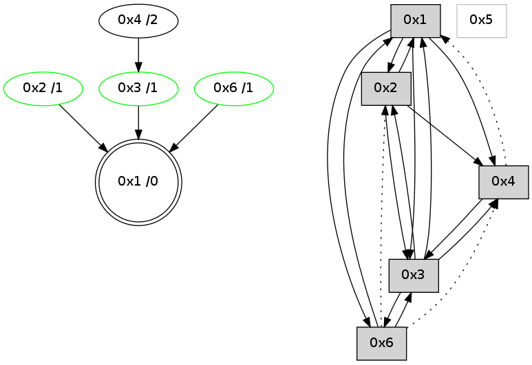

>> << IDX [start] -100 -25 -5 +0 +5 +25 +100 [705.340641022]
 Previous packets
----------------------------------------------------------------------
700.419559 beacon01(adaf) #0 coord=01,02,05,03,04,06 cycle=432.0ms assoc
-- color-indic=0 64 61 7e
700.429520 beacon02(adaf) #0 coord=01,02,05,03,04,06 cycle=432.0ms assoc 64 30 81
700.439520 beacon05(adaf) #0 coord=01,02,05,03,04,06 cycle=432.0ms assoc 64 96 ab
700.449521 beacon03(adaf) #0 coord=01,02,05,03,04,06 cycle=432.0ms assoc 64 0a 8f
700.459520 beacon04(adaf) #0 coord=01,02,05,03,04,06 cycle=432.0ms assoc 64 ac a5
700.469521 beacon06(adaf) #0 coord=01,02,05,03,04,06 cycle=432.0ms assoc 64 d8 b9
700.481176 [Hello(3): seq=501 sym=2,1,6 sysInfo= stat=2:4,0,1,1/1:0,0,1,0/6:14,0,9,1]
700.483522 [STC(1) #0.25 to-color d=0]
----------------------------------------------------------------------
700.911666 beacon01(adaf) #0 coord=01,02,05,03,04,06 cycle=432.0ms assoc
-- color-indic=0 64 2c 79
700.921627 beacon02(adaf) #0 coord=01,02,05,03,04,06 cycle=432.0ms assoc 64 7d 86
700.931628 beacon05(adaf) #0 coord=01,02,05,03,04,06 cycle=432.0ms assoc 64 db ac
700.941627 beacon03(adaf) #0 coord=01,02,05,03,04,06 cycle=432.0ms assoc 64 47 88
700.951628 beacon04(adaf) #0 coord=01,02,05,03,04,06 cycle=432.0ms assoc 64 e1 a2
700.961628 beacon06(adaf) #0 coord=01,02,05,03,04,06 cycle=432.0ms assoc 64 95 be
700.973410 [STC(3)->1 #0.25 stable,to-color d=1]
700.974643 [Hello(1): seq=402 sym=2,3 sysInfo= stat=2:0,0,2,2/3:10,0,5,5]
700.979207 [Hello(4): seq=503 sym=2,1 asym=3 sysInfo= stat=2:4,0,0,1/1:1,0,6,0/3:10,0,7,5]
700.980930 [STC(2)->1 #0.25 stable,to-color d=1]
700.982182 [STC(6)->1 #0.25 stable,to-color d=1]
700.984125 [STC(4)->1 #0.25 stable,to-color d=1]
700.985373 [TreeStatus(2)-.->1 #0.25 stable child=1]
700.987322 [TreeStatus(4)-.->1 #0.25 stable child=1]
700.992740 [TreeStatus(6)-.->1 #0.25 stable child=1]
----------------------------------------------------------------------
701.403774 beacon01(adaf) #0 coord=01,02,05,03,04,06 cycle=432.0ms assoc
-- color-indic=0 64 e8 16
701.413734 beacon02(adaf) #0 coord=01,02,05,03,04,06 cycle=432.0ms assoc 64 b9 e9
701.423736 beacon05(adaf) #0 coord=01,02,05,03,04,06 cycle=432.0ms assoc 64 1f c3
701.433736 beacon03(adaf) #0 coord=01,02,05,03,04,06 cycle=432.0ms assoc 64 83 e7
701.443735 beacon04(adaf) #0 coord=01,02,05,03,04,06 cycle=432.0ms assoc 64 25 cd
701.453736 beacon06(adaf) #0 coord=01,02,05,03,04,06 cycle=432.0ms assoc 64 51 d1
701.465416 [Hello(3): seq=502 sym=2,1,6 sysInfo= stat=2:4,0,2,2/1:1,0,2,0/6:15,0,10,2]
----------------------------------------------------------------------
701.895882 beacon01(adaf) #0 coord=01,02,05,03,04,06 cycle=432.0ms assoc
-- color-indic=0 64 a4 a6
701.905843 beacon02(adaf) #0 coord=01,02,05,03,04,06 cycle=432.0ms assoc 64 f5 59
701.925844 beacon03(adaf) #0 coord=01,02,05,03,04,06 cycle=432.0ms assoc 64 cf 57
701.935844 beacon04(adaf) #0 coord=01,02,05,03,04,06 cycle=432.0ms assoc 64 69 7d
701.961198 [Hello(4): seq=504 sym=2,1 asym=3 sysInfo= stat=2:4,0,1,2/1:1,0,6,0/3:11,0,7,5]
----------------------------------------------------------------------
702.387991 beacon01(adaf) #0 coord=01,02,05,03,04,06 cycle=432.0ms assoc
-- color-indic=0 64 60 c9
702.397952 beacon02(adaf) #0 coord=01,02,05,03,04,06 cycle=432.0ms assoc 64 31 36
702.407953 beacon05(adaf) #0 coord=01,02,05,03,04,06 cycle=432.0ms assoc 64 97 1c
702.417951 beacon03(adaf) #0 coord=01,02,05,03,04,06 cycle=432.0ms assoc 64 0b 38
702.427952 beacon04(adaf) #0 coord=01,02,05,03,04,06 cycle=432.0ms assoc 64 ad 12
702.437954 beacon06(adaf) #0 coord=01,02,05,03,04,06 cycle=432.0ms assoc 64 d9 0e
702.449620 [Hello(3): seq=503 sym=2,1,6 sysInfo= stat=2:4,0,2,2/1:1,0,2,0/6:0,0,10,2]
----------------------------------------------------------------------
702.880099 beacon01(adaf) #0 coord=01,02,05,03,04,06 cycle=432.0ms assoc
-- color-indic=0 64 18 64
702.890062 beacon02(adaf) #0 coord=01,02,05,03,04,06 cycle=432.0ms assoc 64 49 9b
702.900060 beacon05(adaf) #0 coord=01,02,05,03,04,06 cycle=432.0ms assoc 64 ef b1
702.910060 beacon03(adaf) #0 coord=01,02,05,03,04,06 cycle=432.0ms assoc 64 73 95
702.920061 beacon04(adaf) #0 coord=01,02,05,03,04,06 cycle=432.0ms assoc 64 d5 bf
702.930061 beacon06(adaf) #0 coord=01,02,05,03,04,06 cycle=432.0ms assoc 64 a1 a3
702.941722 [Hello(2): seq=997 sym=1,3 sysInfo= stat=1:14,0,4,0/3:13,0,1,4]
702.945100 [Hello(1): seq=404 sym=2,6,3 sysInfo= stat=2:2,0,3,3/6:0,0,1,1/3:12,0,5,5]
702.947194 PARSE ERROR************************
Traceback (most recent call last):
File "PacketAnalysis.py", line 167, in showOperaPacket
structPacket = OperaPacketParse.parsePacket(rawPacket)
File "../../pkg-python/HipSens/Core/OperaPacketParse.py", line 461, in parsePacket
return parseHelloMessage(data)
File "../../pkg-python/HipSens/Core/OperaPacketParse.py", line 109, in parseHelloMessage
sysInfo,stability,colorInfo = struct.unpack("!HBB", linkList[0:4])
error: unpack requires a string argument of length 4
48 1c 04 00 01 f9 00 02 01 06 02 00 03 00 01 00 53 04 00 00 00 00 4c 06 21 04 57 0c 06 01 53 72
702.953046 [STC(1) #0.26 to-color d=0]
----------------------------------------------------------------------
703.372210 beacon01(adaf) #0 coord=01,02,05,03,04,06 cycle=432.0ms assoc
-- color-indic=0 64 dc 0b
703.382170 beacon02(adaf) #0 coord=01,02,05,03,04,06 cycle=432.0ms assoc 64 8d f4
703.392170 beacon05(adaf) #0 coord=01,02,05,03,04,06 cycle=432.0ms assoc 64 2b de
703.402171 beacon03(adaf) #0 coord=01,02,05,03,04,06 cycle=432.0ms assoc 64 b7 fa
703.412172 beacon04(adaf) #0 coord=01,02,05,03,04,06 cycle=432.0ms assoc 64 11 d0
703.422173 beacon06(adaf) #0 coord=01,02,05,03,04,06 cycle=432.0ms assoc 64 65 cc
703.433955 [STC(2)->1 #0.26 stable,to-color d=1]
703.436546 [TreeStatus(2)-.->1 #0.26 stable child=1]
703.438005 [Hello(3): seq=504 sym=4,1,6 sysInfo= stat=4:0,0,0,0/1:2,0,3,0/6:1,0,10,2]
703.441675 [STC(3)->1 #0.26 stable,to-color d=1]
703.444280 [TreeStatus(3)-.->1 #0.26 stable child=1]
----------------------------------------------------------------------
703.864317 beacon01(adaf) #0 coord=01,02,05,03,04,06 cycle=432.0ms assoc
-- color-indic=0 64 90 bb
703.874279 beacon02(adaf) #0 coord=01,02,05,03,04,06 cycle=432.0ms assoc 64 c1 44
703.884277 beacon05(adaf) #0 coord=01,02,05,03,04,06 cycle=432.0ms assoc 64 67 6e
703.894279 beacon03(adaf) #0 coord=01,02,05,03,04,06 cycle=432.0ms assoc 64 fb 4a
703.904279 beacon04(adaf) #0 coord=01,02,05,03,04,06 cycle=432.0ms assoc 64 5d 60
703.914282 beacon06(adaf) #0 coord=01,02,05,03,04,06 cycle=432.0ms assoc 64 29 7c
703.925957 [Hello(2): seq=998 sym=4,1,3 sysInfo= stat=4:0,0,0,0/1:15,0,5,0/3:14,0,2,5]
703.929054 [Hello(1): seq=405 sym=2,6,3 sysInfo= stat=2:2,0,4,4/6:0,0,1,1/3:13,0,6,6]
703.931435 [Hello(6): seq=420 sym=3,1 asym=4,2 sysInfo=hasWarning stat=3:1,0,9,5/1:10,0,7,0/4:0,0,0,0/2:5,0,2,2]
703.935243 [Hello(4): seq=506 sym=3 asym=1 sysInfo= stat=3:13,0,8,6/1:1,0,7,0]
703.937859 [STC(4)->3-.->1 #0.26 to-color d=2]
----------------------------------------------------------------------
704.356425 beacon01(adaf) #0 coord=01,02,05,03,04,06 cycle=432.0ms assoc
-- color-indic=0 64 54 d4
704.366384 beacon02(adaf) #0 coord=01,02,05,03,04,06 cycle=432.0ms assoc 64 05 2b
704.376387 beacon05(adaf) #0 coord=01,02,05,03,04,06 cycle=432.0ms assoc 64 a3 01
704.386386 beacon03(adaf) #0 coord=01,02,05,03,04,06 cycle=432.0ms assoc 64 3f 25
704.396386 beacon04(adaf) #0 coord=01,02,05,03,04,06 cycle=432.0ms assoc 64 99 0f
704.406387 beacon06(adaf) #0 coord=01,02,05,03,04,06 cycle=432.0ms assoc 64 ed 13
704.418060 [Hello(3): seq=505 sym=4,2,1,6 sysInfo= stat=4:1,0,1,0/2:0,0,0,0/1:3,0,3,0/6:2,0,10,2]
----------------------------------------------------------------------
704.848532 beacon01(adaf) #0 coord=01,02,05,03,04,06 cycle=432.0ms assoc
-- color-indic=0 64 19 d3
704.858493 beacon02(adaf) #0 coord=01,02,05,03,04,06 cycle=432.0ms assoc 64 48 2c
704.868493 beacon05(adaf) #0 coord=01,02,05,03,04,06 cycle=432.0ms assoc 64 ee 06
704.878494 beacon03(adaf) #0 coord=01,02,05,03,04,06 cycle=432.0ms assoc 64 72 22
704.888495 beacon04(adaf) #0 coord=01,02,05,03,04,06 cycle=432.0ms assoc 64 d4 08
704.898495 beacon06(adaf) #0 coord=01,02,05,03,04,06 cycle=432.0ms assoc 64 a0 14
704.910183 [Hello(4): seq=507 sym=3 asym=1 sysInfo= stat=3:14,0,8,6/1:1,0,7,0]
704.913597 [Hello(1): seq=406 sym=2,6,3,4 asym= sysInfo= stat=2:2,0,4,4/6:1,0,1,1/3:14,0,6,6/4:0,0,1,0]